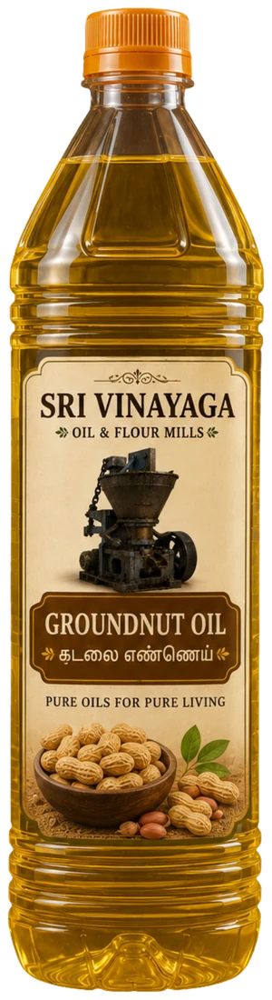

Groundnut oil from sun-dried seed, pressed in our own mill, never blended.வெயிலில் உலர்த்திய நிலக்கடலையிலிருந்து எங்கள் மில்லிலேயே பிழிந்த எண்ணெய். கலப்பில்லை.
Loading sizes and prices…அளவுகள், விலைகள் ஏற்றப்படுகின்றன…
Usesபயன்பாடுகள்
- Everyday cooking, sautéing and fryingஅன்றாட சமையல், வதக்குதல், பொரித்தல்
- Frying snacks such as murukku, vadai and bajji at homeவீட்டில் முறுக்கு, வடை, பஜ்ஜி போன்ற பலகாரங்கள் பொரிக்க
- Roasting dosa and chapatiதோசை, சப்பாத்தி சுட
- Tempering and stir-friesதாளிப்பு, பொரியல்
Why Sri Vinayagaஏன் ஸ்ரீ விநாயகா
- One seed type only: groundnut, never blendedஒரே வகை விதை: நிலக்கடலை மட்டும், கலப்பில்லை
- Sun-dried groundnut pressed in our own iron cast screw expellerவெயிலில் உலர்த்திய நிலக்கடலையை எங்கள் இரும்பு வார்ப்பு ஸ்க்ரூ எக்ஸ்பெல்லரில் பிழிகிறோம்
- Settled in the mill and never filteredமில்லில் தெளிய வைத்து, வடிகட்டாமல் தருகிறோம்
- Packed in the family mill at Thiruvanaikoil, Trichy, running since 19351935 முதல் இயங்கும் குடும்ப மில்லில், திருவானைக்கோவில், திருச்சியில் பாட்டிலிடப்படுகிறது
Storing itசேமிப்பு
Keep in a cool, dry place away from direct sunlight. Close the lid tightly after use.நேரடி சூரிய ஒளி படாத குளிர்ந்த, உலர்ந்த இடத்தில் வைக்கவும். பயன்படுத்திய பின் மூடியை இறுக்கமாக மூடவும்.
Questionsகேள்விகள்
How is this oil made?இந்த எண்ணெய் எப்படி தயாரிக்கப்படுகிறது?
We dry groundnut in the sun and press it in our own iron cast screw expeller at the mill in Thiruvanaikoil. The oil is settled and not filtered, and it is never blended with another oil.நிலக்கடலையை வெயிலில் உலர்த்தி, திருவானைக்கோவில் மில்லில் எங்கள் இரும்பு வார்ப்பு ஸ்க்ரூ எக்ஸ்பெல்லரில் பிழிகிறோம். எண்ணெய் தெளிய வைக்கப்படுகிறது, வடிகட்டப்படுவதில்லை; வேறு எண்ணெயுடன் கலக்கப்படுவதில்லை.
Which pack sizes are available?எந்தெந்த அளவுகளில் கிடைக்கும்?
500 ml, 1 litre, 5 litre can and 15 kg tin. Large tins are for homes with big needs, hotels and temples; for bulk supply use the bulk enquiry form on our website.500 மி.லி, 1 லிட்டர், 5 லிட்டர் கேன் மற்றும் 15 கிலோ டின். பெரிய டின்கள் அதிக தேவையுள்ள வீடுகள், ஹோட்டல்கள், கோயில்களுக்கு ஏற்றவை; மொத்த விநியோகத்திற்கு எங்கள் இணையதளத்தின் மொத்த விசாரணைப் படிவத்தைப் பயன்படுத்துங்கள்.
How long does delivery take?டெலிவரிக்கு எவ்வளவு நாட்கள் ஆகும்?
Delivery takes 2 to 5 working days after dispatch, across Tamil Nadu. You can track the order on our website with the order number and your mobile number.அனுப்பிய பின் 2 முதல் 5 வேலை நாட்களில் தமிழ்நாடு முழுவதும் டெலிவரி ஆகும். ஆர்டர் எண்ணும் மொபைல் எண்ணும் கொண்டு எங்கள் இணையதளத்தில் கண்காணிக்கலாம்.
Our other oilsஎங்கள் மற்ற எண்ணெய்கள்
Gingelly Oilநல்லெண்ணெய்Coconut Oilதேங்காய் எண்ணெய்Castor Oilவிளக்கெண்ணெய்Neem Oilவேப்ப எண்ணெய்
Sri Vinayaga Oil & Flour Mills · 120 Vellalar Street, Kondayampettai Agraharam, Thiruvanaikoil, Srirangam, Trichy 620005 · 99658 42548 · Policiesகொள்கைகள்